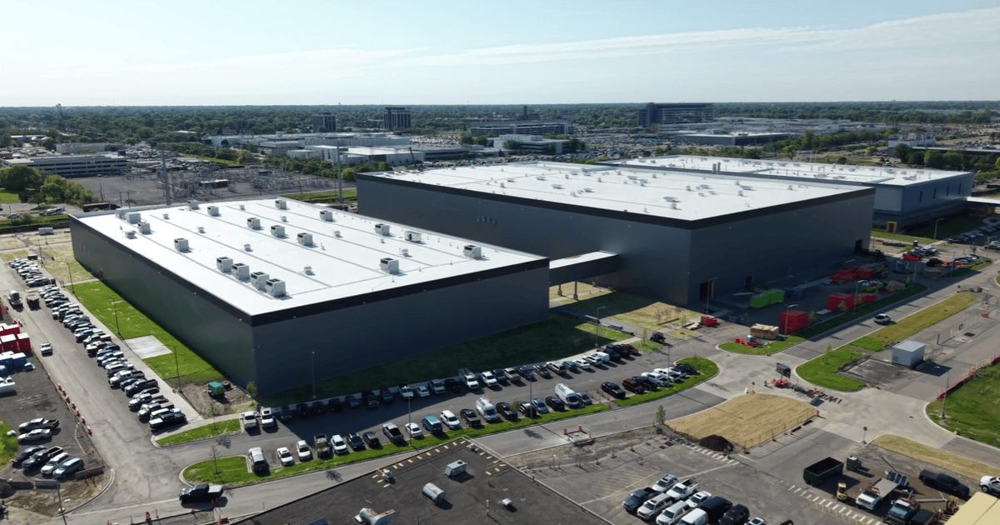

Внутри мини-завода, где GM строит свое будущее электромобилей
Если вы проезжаете по обширному кампусу GM в Уоррене, штат Мичиган, вы, вероятно, проигнорируете пару соседних анонимных белых зданий, спрятанных в верхнем течении пространства площадью 710 акров.
Внутри этих зданий, общая площадь которых составляет полмиллиона квадратных футов, находится массивный строительный проект, который все еще находится в стадии реализации.
После завершения строительства в нем будет …